d <- rio::import(file = "adat/lin_reg_fizetes_elegedettseg_02.xlsx")
str(d)
#> 'data.frame': 5 obs. of 2 variables:
#> $ fizetes : num 44 66 89 155 130
#> $ elegedettseg: num 30 45 60 100 85
d
#> fizetes elegedettseg
#> 1 44 30
#> 2 66 45
#> 3 89 60
#> 4 155 100
#> 5 130 851 Lineáris regresszió
A korrelációszámítás két változó szimmetrikus kapcsolatának erősségét és irányát vizsgálja csupán. Mivel az egyszerű lineáris regresszió két változó függvényszerű kapcsolatát vizsgálja, ez már nem szimmetrikus viszony, vagyis megkülönböztetjük a
- függő változót (célváltozót, \(Y\)-t), amely “elszenvedi” a független változó hatását, és a
- független változót (magyarázó változót, \(X\)-et), amely befolyásolja a függő változót.
A többszörös lineáris regresszió annyiban tér el az egyszerű lineáris regressziótól, hogy a független változók száma egynél több. Itt is megkülönböztetjük a
- függő változót (célváltozót, \(Y\)-t), amelynek értékei a független változóktól függenek, és a
- független változókat (magyarázó változókat, \(X_1,X_2,..,X_r\)-t) amelyek hatnak a függő változóra.
Két változó (\(X\) és \(Y\)) között nem feltétlenül van szisztematikus kapcsolat, lehet a két változó független is egymástól. Ha van valamilyen szisztematikus kapcsolat \(X\) és \(Y\) között, akkor az még számos formában megvalósulhat, ezek egyike a lineáris kapcsolat,
- amely olyan függvényszerű kapcsolat, amely megmondja, hogy milyen mértékű változás várható az \(Y\) változóban, ha \(X\) adott mértéknyit változik.
1.1 Egyszerű lineáris regresszió
Az egyszerű lineáris regressziós modell: \(Y=\beta_0+β_1 X+\epsilon\), amely egy egyenessel (regressziós egyenes) írja le a két változó függvényszerű kapcsolatát, ahol
- \(\beta_0\) – tengelymeszet, a regressziós egyenes itt metszi az y tengelyt
- \(\beta_1\) – meredekség, a regressziós egyenes és az x tengely szögének tangense
- \(\epsilon\) – hibatag, amelyről feltételezzük, hogy normális eloszlású 0 várható értékkel.
A \(\beta_0\) és \(\beta_1\) populációbeli paramétereket a minta alapján becsüljük a legkisebb négyzetek módszere segítségével, így kapjuk a \(b_0\) és \(b_1\) becsléseket.
A regressziós egyenes birtokában tetszőleges \(X\) értékhez tudunk \(Y\) értéket előre jelezni, vagyis jósolni bizonyos hibával: \(\hat{Y}=b_0+b_1 X\).
Például egy fiktív adatbázison vizsgálhatjuk a fizetés és a munkahellyel való elégedettség kapcsolatát (Münnich és mtsai., 2006).
lm_1 <- lm(elegedettseg ~ fizetes, data = d)
summary(lm_1)
#>
#> Call:
#> lm(formula = elegedettseg ~ fizetes, data = d)
#>
#> Residuals:
#> 1 2 3 4 5
#> -0.8423 0.3420 0.8983 -0.5488 0.1508
#>
#> Coefficients:
#> Estimate Std. Error t value Pr(>|t|)
#> (Intercept) 3.210890 0.931791 3.446 0.0411 *
#> fizetes 0.627987 0.008873 70.774 6.22e-06 ***
#> ---
#> Signif. codes: 0 '***' 0.001 '**' 0.01 '*' 0.05 '.' 0.1 ' ' 1
#>
#> Residual standard error: 0.8077 on 3 degrees of freedom
#> Multiple R-squared: 0.9994, Adjusted R-squared: 0.9992
#> F-statistic: 5009 on 1 and 3 DF, p-value: 6.216e-06Jamovi-ban a Regression / Linear Regression menüpontot kell használnunk.
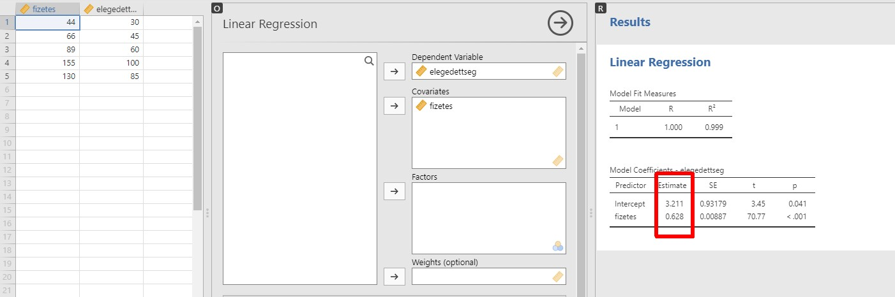
A fenti elemzés alapján például a \(\hat{Y}=b_0+b_1 X\) konkrét formája:
becsült elégedettség = 3,211+ 0,628 * fizetés- A \(b_0\) értelmezése: a zérus \(X\)-hez tartozó \(Y\) érték.
- A \(b_1\) értelmezése: az \(X\) egy egységnyi növekedéséhez ilyen nagyságú \(Y\) változás tartozik.
Tudjuk, hogy az \(r_{XY}\) Pearson-féle korrelációs együttható, az \(X\) és \(Y\) változók közötti kapcsolat erősségét és irányát mutatja meg. A \(b_1\) és \(r_{XY}\) kapcsolatban áll:
- azonos az előjelük,
- az \(X\) egy szórásnyi növekedéséhez tartozó \(Y\) változás megegyezik az \(Y\) szórásának \(r_{XY}\) szeresével (rövidebben, a populációbeli paraméterekkel megfogalmazva: \(\beta_1=\frac{\sigma_Y}{\sigma_X}\rho_{XY}\)
A determinációs együttható (\(R^2\)) a korrelációs együttható négyzete \((R^2=r_{XY}^2)\), amely szimmetrikus mutató, megmutatja, hogy \(Y\) varianciájának mekkora hányadát magyarázza \(X\) varianciája, vagy fordítva, \(X\) varianciájának mekkora hányadát magyarázza \(Y\) varianciája.
A fenti példában látható, hogy 99%-ban lehet a függő változó varianciáját magyarázni a független változóval (az arányt legtöbbször százalékos formában adjuk meg).
summary(lm_1)$r.squared
#> [1] 0.9994014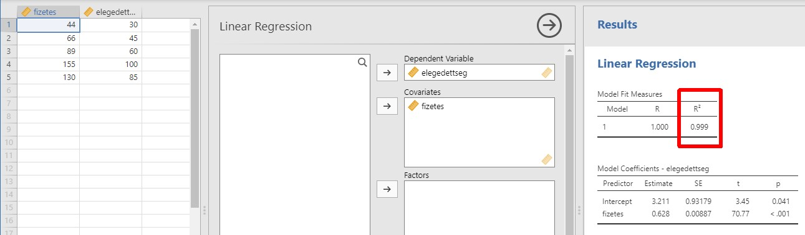
A \(\beta_0\) és \(\beta_1\) együtthatók értékét hipotézisvizsgálatokkal vizsgálhatjuk:
- \(H_0\): \(\beta_0=0\), \(H_1: \beta_0 \neq 0\) Kérdés: origón átmenő a regresszió? (\(H_0\) megtartása esetén igen)
- \(H_0\): \(\beta_1=0\), \(H_1: \beta_1 \neq 0\) Kérdés: \(Y\) függ \(X\)-től? (\(H_1\) elfogadása esetén igen)
A példában látható, hogy nem origón átmenő a regresszió, és az elégedettség függ a fizetéstől.
summary(lm_1)$coefficients
#> Estimate Std. Error t value Pr(>|t|)
#> (Intercept) 3.2108896 0.931790852 3.445934 4.105805e-02
#> fizetes 0.6279867 0.008873152 70.773796 6.216433e-061.2 Többszörös lineáris regresszió
A többszörös lineáris regressziós modell: \(Y=\beta_0+\beta_1 X_1+\beta_2 X_2+\dots + \beta_r X_r+\epsilon\).
Míg az egyszerű lineáris regresszió esetén a regressziós egyenes írta le a két változó kapcsolatát, a többszörös lineáris regresszió esetén a lineáris függvény egy \(r\) dimenziós sík az \(r+1\) dimenziós térben.
Az egyes \(\beta_i\) együtthatók becslése itt is a legkisebb négyzetek elve alapján történik, így kapjuk a \(b_0, b_1, \dots, b_r\) becsléseket.
A lineáris függvény birtokában tetszőleges \(X_1,X_2,\dots,X_r\) értékekhez tudunk \(Y\) értéket előre jelezni, vagyis jósolni bizonyos hibával: \(\hat{Y}=b_0+b_1 X_1+\dots+ b_r X_r\).
d <- rio::import(file = "adat/lin_reg_fizetes_eletkor_elegedettseg_01.xlsx")
str(d)
#> 'data.frame': 5 obs. of 3 variables:
#> $ fizetes : num 44 66 89 155 130
#> $ eletkor : num 25 65 21 35 40
#> $ elegedettseg: num 37 36 61 92 76
d
#> fizetes eletkor elegedettseg
#> 1 44 25 37
#> 2 66 65 36
#> 3 89 21 61
#> 4 155 35 92
#> 5 130 40 76lm_1 <- lm(elegedettseg ~ fizetes + eletkor, data = d)
summary(lm_1)
#>
#> Call:
#> lm(formula = elegedettseg ~ fizetes + eletkor, data = d)
#>
#> Residuals:
#> 1 2 3 4 5
#> 0.28596 0.08556 -0.30015 0.71047 -0.78184
#>
#> Coefficients:
#> Estimate Std. Error t value Pr(>|t|)
#> (Intercept) 21.508055 1.292166 16.64 0.00359 **
#> fizetes 0.519198 0.008847 58.69 0.00029 ***
#> eletkor -0.305549 0.023279 -13.12 0.00575 **
#> ---
#> Signif. codes: 0 '***' 0.001 '**' 0.01 '*' 0.05 '.' 0.1 ' ' 1
#>
#> Residual standard error: 0.8047 on 2 degrees of freedom
#> Multiple R-squared: 0.9995, Adjusted R-squared: 0.9989
#> F-statistic: 1841 on 2 and 2 DF, p-value: 0.000543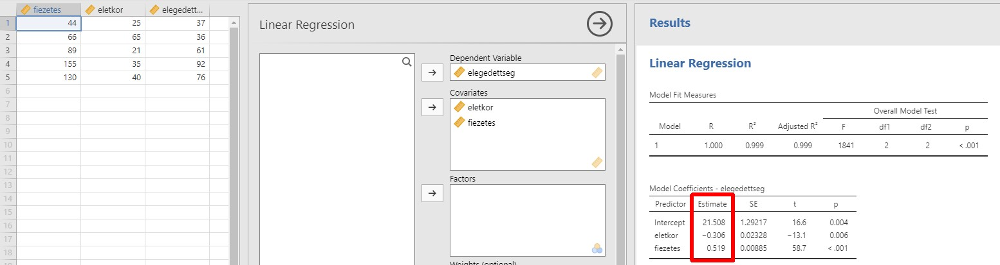
A fenti példában a lineáris regresszió futtatása után azt mondhatjuk:
becsült elégedettség = 21,05 -0,306*életkor + 0,519*fizetésMás szavakkal a fizetés tekintetében a magasabb fizetés nagyobb mértékű elégedettséggel jár, addig az életkor esetében az évek számának növekedése a munkahellyel való elégedetlenséget vonja maga után.
- A \(b_0\) értelmezése: a csupa zérus \(X_1, X_2,\dots,X_r\)-ekhez tartozó \(Y\) érték.
- A \(b_i\) \((i=1,\dots,r)\) értelmezése: az \(X_i\) hatása úgy, hogy a többi független változót is figyelembe vesszük.
A fenti többszörös lineáris regressziós együtthatók nem alkalmasak az egyes magyarázó változóktól való függés erősségének mérésére, ugyanis a nagyságuk függ a változó értékeinek nagyságától is. Ezért a standard lineáris regressziós együtthatókat használjuk, amelyek már mértékegység nélküli, egymással összehasonlítható arányszámok, így abszolút értékeiket összevetve megtudhatjuk, milyen relatív fontossággal bírnak az egyes független változók a függő változó magyarázásában.
lsr::standardCoefs(lm_1)
#> b beta
#> fizetes 0.5191980 0.9677518
#> eletkor -0.3055489 -0.2164358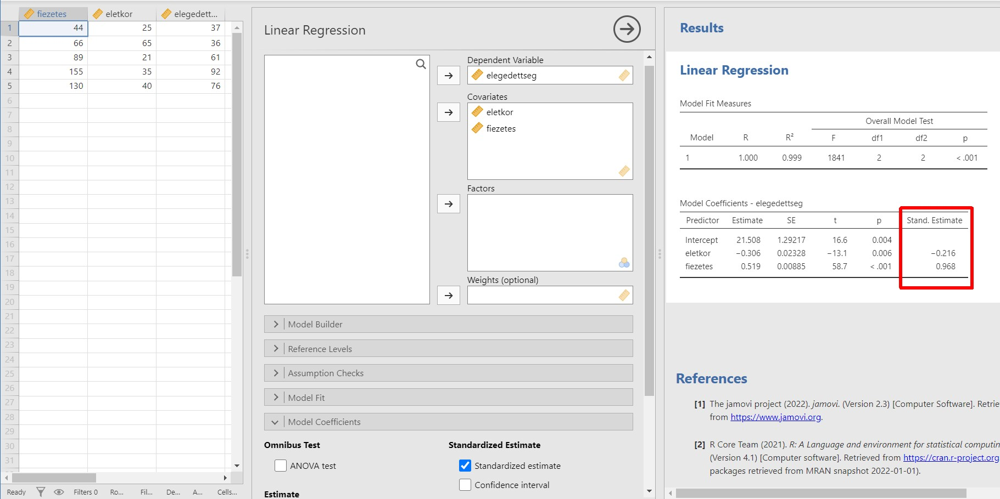
A fenti példában láthatjuk, hogy a fizetés erősebb kapcsolatban van az elégedettséggel, hiszen a standardizált együtthatójának értéke abszolút értékben nagyobb, mint az életkor standardizált együtthatójának abszolút értéke.
Többszörös lineáris regresszió esetén több hipotézisvizsgálat végezhető:
- minden együtthatót külön tesztelhetünk t-próbákkal \((n-r-1)\) szabadsági fokkal
- \(H_0:\beta_i=0\), \(H_1:\beta_i\neq0\), \(i=1,\dots,r\) Kérdés: \(Y\) függ \(X_i\)-től? (\(H_1\) elfogadása esetén igen)
- a teljes modellt tesztelhetjük F-próbával \((r,n-r-1)\) szabadsági fokkal
- \(H_0: \text{minden } \beta_i=0\), \(H_1: \text{van olyan i, melyre } \beta_i\neq0\) Kérdés: a modell bír valamilyen bejósló erővel? (\(H_1\) elfogadása esetén igen)
summary(lm_1)$coefficients
#> Estimate Std. Error t value Pr(>|t|)
#> (Intercept) 21.5080549 1.29216584 16.64496 0.0035899688
#> fizetes 0.5191980 0.00884672 58.68819 0.0002902081
#> eletkor -0.3055489 0.02327903 -13.12550 0.0057544940
summary(lm_1)$fstatistic
#> value numdf dendf
#> 1840.547 2.000 2.000
pf(q = summary(lm_1)$fstatistic[1], df1 = summary(lm_1)$fstatistic[2],
df2 = summary(lm_1)$fstatistic[3], lower.tail = F)
#> value
#> 0.0005430217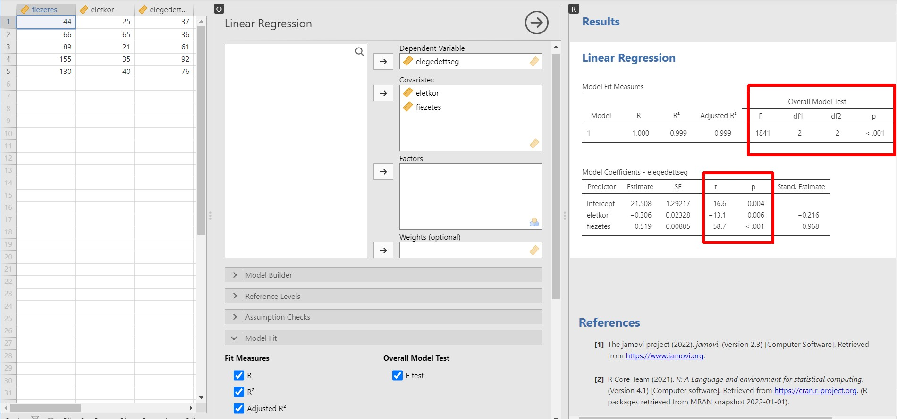
A lenti példában látható, hogy mindkét magyarázó változótól függ az elégedettség (életkor p-értéke: 0,006, a fizetés p-értéke p < 0,001), és a teljes modell bír magyarázó erővel (p-érték: p < 0,001).
A függő változó és a független változók közötti korreláció erősségének leírására több mennyiséget használhatunk
többszörös korrelációs együttható: \(R\), amely a függő változó és a becsült értékek közötti korrelációs együttható értékével egyezik meg, azaz \(R(Y,X_1,X_2,…,X_r )=R(Y,\hat{Y})\). Valójában a lineáris regresszió ennek a korrelációs együtthatónak az értékét maximalizálja, mikor az \(\hat{Y}\)-t \(X\)-ek speciális lineáris kombinációjaként előállítja.
többszörös determinációs együttható: \(R^2\), amely a többszörös korrelációs együttható négyzete, és megmutatja, hogy a magyarázó változók a függő változó ingadozásának hányad részét magyarázzák.
korrigált determinációs együttható: \(R_{adj}^2\), amely kiküszöböli az \(R^2\) azon tulajdonságát, hogy a magyarázó változók számának növekedésével, függetlenül azok hatásától, nő az értéke. Így alkalmas több modell esetén a magyarázó erők összehasonlítására, akkor is, ha azok eltérő számú független változót használnak.
summary(lm_1)$r.squared
#> [1] 0.999457
summary(lm_1)$adj.r.squared
#> [1] 0.998914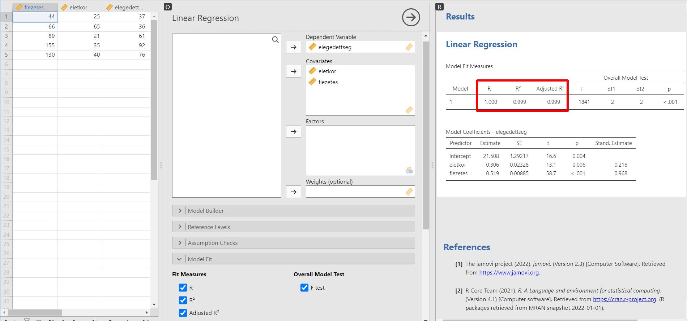
A fenti példában látható mindhárom fenti mutató. Az \(R_{adj}^2\) leolvasásával láthatjuk, hogy a két független változó, az életkor és a fizetés a függő változó 99%-át magyarázza.
1.3 Parciális korrelációs együttható
Parciális korrelációs együttható: két változó (\(S_1,S_2\)) közötti korreláció mértéke, miután változók egy halmazának \((T_1,T_2,\dots,T_g)\) a két változó korrelációjára vonatkozó hatását többszörös lineáris regresszióval kiküszöböljük:
- \(R( S_1,S_2 |T_1,T_2,\dots,T_g )= R(S_1- \hat{S_1},S_2- \hat{S_2})\), ahol \(\hat{S_1}\) és \(\hat{S_2}\) az \(S_1\) és \(S_2\) változó többszörös lineáris regresszióból származó becslése a \(T_1,T_2,\dots,T_g\) magyarázó változók esetén.
d <- rio::import(file = "adat/lin_reg_intelligencia_testmagassag_eletkor_01.xlsx")
str(d)
#> 'data.frame': 5 obs. of 3 variables:
#> $ intelligencia: num 81 86 91 101 111
#> $ testmagassag : num 138 145 156 163 167
#> $ eletkor : num 9 12 14 18 22
d
#> intelligencia testmagassag eletkor
#> 1 81 138 9
#> 2 86 145 12
#> 3 91 156 14
#> 4 101 163 18
#> 5 111 167 22cor.test(d$intelligencia, d$testmagassag)
#>
#> Pearson's product-moment correlation
#>
#> data: d$intelligencia and d$testmagassag
#> t = 5.4629, df = 3, p-value = 0.01205
#> alternative hypothesis: true correlation is not equal to 0
#> 95 percent confidence interval:
#> 0.4463631 0.9970093
#> sample estimates:
#> cor
#> 0.953235
RcmdrMisc::partial.cor(d, tests = T)
#>
#> Partial correlations:
#> intelligencia testmagassag eletkor
#> intelligencia 0.00000 -0.46317 0.97875
#> testmagassag -0.46317 0.00000 0.62856
#> eletkor 0.97875 0.62856 0.00000
#>
#> Number of observations: 5
#>
#> Pairwise two-sided p-values:
#> intelligencia testmagassag eletkor
#> intelligencia 0.5368 0.0213
#> testmagassag 0.5368 0.3714
#> eletkor 0.0213 0.3714
#>
#> Adjusted p-values (Holm's method)
#> intelligencia testmagassag eletkor
#> intelligencia 0.7429 0.0638
#> testmagassag 0.7429 0.7429
#> eletkor 0.0638 0.7429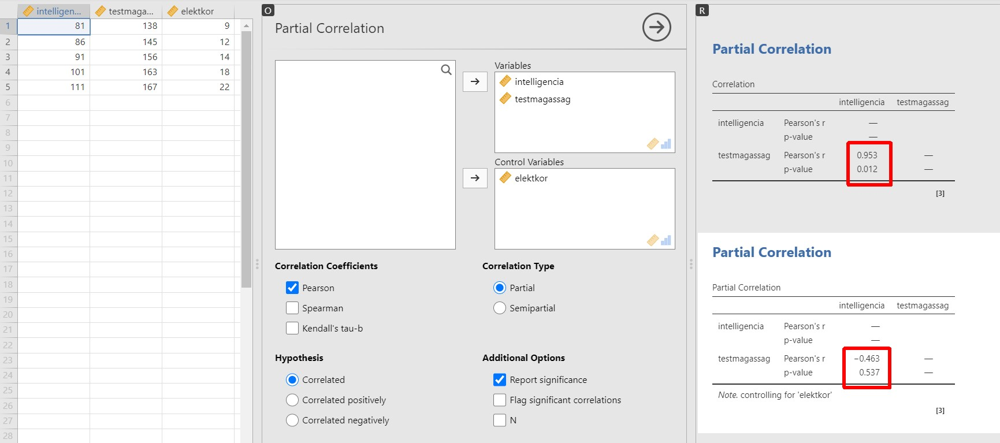 A fenti példában látható, hogy míg szignifikáns erős pozitív kapcsolat van az intelligencia és a magasság között (korrelációs együttható: \(r=0,95; p=0,012\)), ez a kapcsolat eltűnik, ha figyelembe vesszük az életkor változót is (parciális korreláció: \(r_{par}=-0,46; p=0,537\)). Vagyis sikerült az intelligencia és a testmagasság közötti kapcsolat erősségét megállapítani, miközben az életkor hatását erre a kapcsolatra kiküszöböltük.
A többszörös lineáris regressziós modell \((Y=\beta_0+\beta_1 X_1+\beta_2 X_2+\dots+\beta_r X_r+\epsilon)\) becsült paraméterei \((b_1,b_2,…,b_r)\) nagyban hasonlítanak a parciális korrelációs együtthatókra, mivel minden \(b_i\) az \(Y\) és \(X_i\) közötti kapcsolat erősségét írja le, miközben a többi magyarázó változó (\(X_1,X_2,\dots,X_r\), összesen \((r-1)\) db, \(X_i\) nincs köztük) hatását kiküszöböljük a két változó korrelációjából.
A parciális korrelációs együtthatók és a többszörös lineáris regresszió együtthatói között annyira közvetlen a kapcsolat, hogy azonos p-érték tartozik hozzájuk, mint a lenti példában ez látható is lesz.
A lenti példában két modell szerepel, először az intelligencia és a testmagasság függvényszerű kapcsolatát vizsgáljuk és azt a meglepő dolgot tapasztaljuk, hogy minél magasabb valaki, annál intelligensebb \((p=0,012)\), majd ha bevonjuk az életkor változót, akkor azt tapasztalhatjuk, hogy eltűnik az intelligencia és a testmagasság közötti kapcsolat \((p=0,537)\).
lm_1 <- lm(intelligencia ~ testmagassag, data = d)
summary(lm_1)
#>
#> Call:
#> lm(formula = intelligencia ~ testmagassag, data = d)
#>
#> Residuals:
#> 1 2 3 4 5
#> 1.9228 0.3114 -5.0779 -1.6892 4.5328
#>
#> Coefficients:
#> Estimate Std. Error t value Pr(>|t|)
#> (Intercept) -51.2613 26.6569 -1.923 0.1502
#> testmagassag 0.9445 0.1729 5.463 0.0121 *
#> ---
#> Signif. codes: 0 '***' 0.001 '**' 0.01 '*' 0.05 '.' 0.1 ' ' 1
#>
#> Residual standard error: 4.202 on 3 degrees of freedom
#> Multiple R-squared: 0.9087, Adjusted R-squared: 0.8782
#> F-statistic: 29.84 on 1 and 3 DF, p-value: 0.01205
lm_2 <- lm(intelligencia ~ testmagassag + eletkor, data = d)
summary(lm_2)
#>
#> Call:
#> lm(formula = intelligencia ~ testmagassag + eletkor, data = d)
#>
#> Residuals:
#> 1 2 3 4 5
#> 0.89121 -1.16330 -0.09995 0.21170 0.16034
#>
#> Coefficients:
#> Estimate Std. Error t value Pr(>|t|)
#> (Intercept) 73.1026 19.6042 3.729 0.0650 .
#> testmagassag -0.1210 0.1637 -0.739 0.5368
#> eletkor 2.6338 0.3902 6.750 0.0213 *
#> ---
#> Signif. codes: 0 '***' 0.001 '**' 0.01 '*' 0.05 '.' 0.1 ' ' 1
#>
#> Residual standard error: 1.055 on 2 degrees of freedom
#> Multiple R-squared: 0.9962, Adjusted R-squared: 0.9923
#> F-statistic: 259.3 on 2 and 2 DF, p-value: 0.003841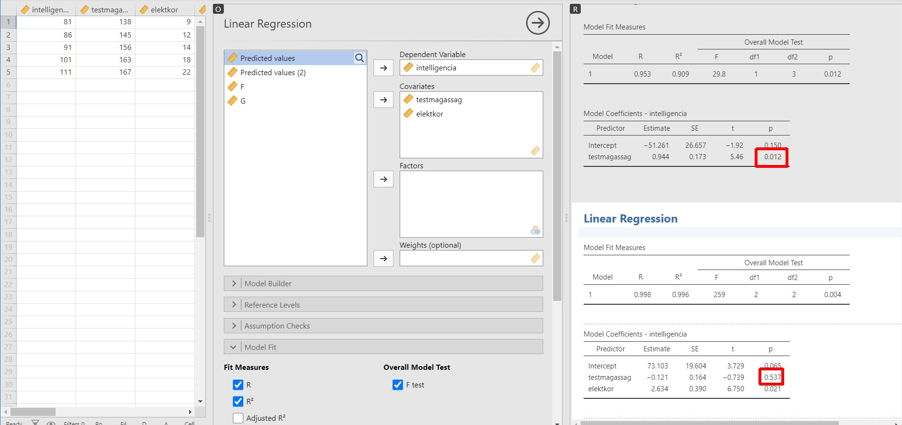
1.4 A többszörös lineáris regresszió esetei
1.4.1 Egyetlen dichotóm magyarázó változó
A magyarázó változóink eddig kvantitatívak voltak, de kategorikus változók is lehetnek. Ha a kategorikus változónk csupán 2 értékű, akkor a becsült (\(b_0\), \(b_1\)) együtthatók értelmezése módosul. A tengelymetszet (\(b_0\)) a kategorikus változó referencia szintjén a függő változó átlagát tartalmazza, míg a (\(b_1\)) a kategorikus változó másik szintjén számolt átlag eltérését a \(b_0\)-hoz képest.
d <- rio::import(file = "adat/lin_reg_magassag_hajhossz_nem_01.xlsx")
d$nem <- factor(d$nem, levels = c("nő", "férfi"))
str(d)
#> 'data.frame': 6 obs. of 3 variables:
#> $ magassag: num 158 159 162 170 182 179
#> $ hajhossz: num 28 25 20 1 1.5 3
#> $ nem : Factor w/ 2 levels "nő","férfi": 1 1 1 2 2 2
d
#> magassag hajhossz nem
#> 1 158 28.0 nő
#> 2 159 25.0 nő
#> 3 162 20.0 nő
#> 4 170 1.0 férfi
#> 5 182 1.5 férfi
#> 6 179 3.0 férfilm_1 <- lm(magassag ~ nem, data = d)
summary(lm_1)
#>
#> Call:
#> lm(formula = magassag ~ nem, data = d)
#>
#> Residuals:
#> 1 2 3 4 5 6
#> -1.6667 -0.6667 2.3333 -7.0000 5.0000 2.0000
#>
#> Coefficients:
#> Estimate Std. Error t value Pr(>|t|)
#> (Intercept) 159.667 2.687 59.413 4.81e-07 ***
#> nemférfi 17.333 3.801 4.561 0.0103 *
#> ---
#> Signif. codes: 0 '***' 0.001 '**' 0.01 '*' 0.05 '.' 0.1 ' ' 1
#>
#> Residual standard error: 4.655 on 4 degrees of freedom
#> Multiple R-squared: 0.8387, Adjusted R-squared: 0.7984
#> F-statistic: 20.8 on 1 and 4 DF, p-value: 0.01033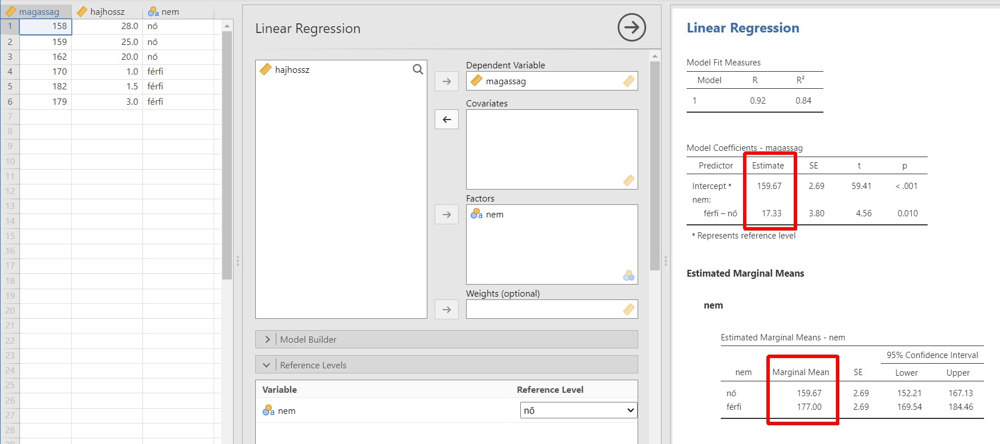
A fenti példa a nem hatását vizsgálja testmagasságra. A p-érték alapján ez a hatás szignifikáns, tehát a függés fennáll, a paraméterek pedig a nők átlagáról \((b_0=159,67)\) és a férfiak és nők átlagának eltéréséről tájékoztatnak \((b_1=17,33)\).
1.5 Modellválasztás
Előfordulhat, hogy egy jelenség vizsgálatakor több lineáris regressziós modellt is meg tudunk fogalmazni, nem csak egyetlen modell létezik. Ez a probléma leggyakrabban úgy jelenik meg, hogy rengeteg független változónk van, és nem tudjuk eldönteni, hogy elég egy kisebb modell, néhány változóval, vagy vegyük inkább a nagyobb modellt több változóval.
A megfelelő modell megtaláláshoz a modelleket összehasonlíthatjuk F-próba segítségével, szignifikáns eredmény esetén a két modell magyarázó ereje eltér egymástól. Ilyenkor a célunk a legszűkebb (legkevesebb magyarázó változót tartalmazó), de a legbővebbtől szignifikánsan nem különböző modell megtalálása.
A korrigált determinációs együttható \((R_{adj}^2)\) is alkalmas mód a modellek összehasonlítására: az 1-hez legközelebbi értékkel bíró modell rendelkezik a legnagyobb magyarázó erővel. Léteznek már kritériumok is:
- AIC (Akaike-kritérium): minél kisebb az AIC értéke, annál nagyobb a modell magyarázó ereje.
- BIC (Bayes-kritérium): minél kisebb a BIC értéke, annál nagyobb a modell magyarázó ereje.
- RMSE (négyzetes középérték, Root Mean Square Error) az a mennyiség, amennyivel a vizsgált értékek eltérnek az előre megbecsült értékektől. Minél kisebb ez az érték, annál jobban becsül a modell.
d <- rio::import(file = "adat/lin_reg_fizetes_eletkor_elegedettseg_01.xlsx")
str(d)
#> 'data.frame': 5 obs. of 3 variables:
#> $ fizetes : num 44 66 89 155 130
#> $ eletkor : num 25 65 21 35 40
#> $ elegedettseg: num 37 36 61 92 76
d
#> fizetes eletkor elegedettseg
#> 1 44 25 37
#> 2 66 65 36
#> 3 89 21 61
#> 4 155 35 92
#> 5 130 40 76lm_1 <- lm(elegedettseg ~ fizetes, data = d)
summary(lm_1)
#>
#> Call:
#> lm(formula = elegedettseg ~ fizetes, data = d)
#>
#> Residuals:
#> 1 2 3 4 5
#> 4.249 -8.272 4.684 1.123 -1.785
#>
#> Coefficients:
#> Estimate Std. Error t value Pr(>|t|)
#> (Intercept) 9.71048 7.07562 1.372 0.26355
#> fizetes 0.52365 0.06738 7.772 0.00443 **
#> ---
#> Signif. codes: 0 '***' 0.001 '**' 0.01 '*' 0.05 '.' 0.1 ' ' 1
#>
#> Residual standard error: 6.134 on 3 degrees of freedom
#> Multiple R-squared: 0.9527, Adjusted R-squared: 0.9369
#> F-statistic: 60.4 on 1 and 3 DF, p-value: 0.004432
lm_2 <- lm(elegedettseg ~ fizetes + eletkor, data = d)
summary(lm_2)
#>
#> Call:
#> lm(formula = elegedettseg ~ fizetes + eletkor, data = d)
#>
#> Residuals:
#> 1 2 3 4 5
#> 0.28596 0.08556 -0.30015 0.71047 -0.78184
#>
#> Coefficients:
#> Estimate Std. Error t value Pr(>|t|)
#> (Intercept) 21.508055 1.292166 16.64 0.00359 **
#> fizetes 0.519198 0.008847 58.69 0.00029 ***
#> eletkor -0.305549 0.023279 -13.12 0.00575 **
#> ---
#> Signif. codes: 0 '***' 0.001 '**' 0.01 '*' 0.05 '.' 0.1 ' ' 1
#>
#> Residual standard error: 0.8047 on 2 degrees of freedom
#> Multiple R-squared: 0.9995, Adjusted R-squared: 0.9989
#> F-statistic: 1841 on 2 and 2 DF, p-value: 0.000543
anova(lm_1, lm_2)
#> Analysis of Variance Table
#>
#> Model 1: elegedettseg ~ fizetes
#> Model 2: elegedettseg ~ fizetes + eletkor
#> Res.Df RSS Df Sum of Sq F Pr(>F)
#> 1 3 112.864
#> 2 2 1.295 1 111.57 172.28 0.005754 **
#> ---
#> Signif. codes: 0 '***' 0.001 '**' 0.01 '*' 0.05 '.' 0.1 ' ' 1
performance::model_performance(lm_1)
#> # Indices of model performance
#>
#> AIC | AICc | BIC | R2 | R2 (adj.) | RMSE | Sigma
#> ------------------------------------------------------------
#> 35.773 | 59.773 | 34.601 | 0.953 | 0.937 | 4.751 | 6.134
performance::model_performance(lm_2)
#> # Indices of model performance
#>
#> AIC | AICc | BIC | R2 | R2 (adj.) | RMSE | Sigma
#> ----------------------------------------------------------
#> 15.436 | Inf | 13.873 | 0.999 | 0.999 | 0.509 | 0.805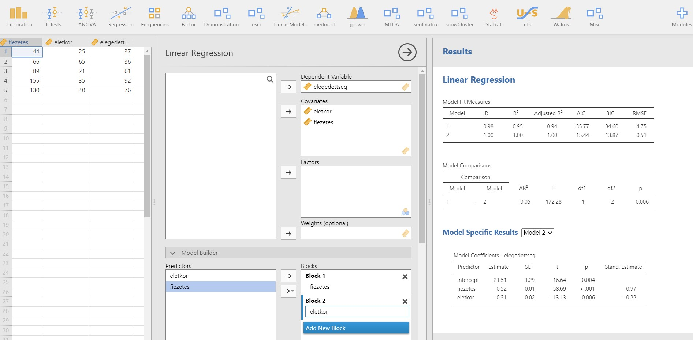
A fenti példán látható, hogy két modellt építettünk. Az 1. modell az elégedettséget a fizetés segítségével próbálja jósolni. A 2. modell az elégedettséget a fizetéssel és az életkorral. Láthatjuk a 2. modell szignifikánsan eltér magyarázó erőben a az 1. modelltől, valamint a modell “jóságát” leíró mutatók mindegyike kedvezőbb a 2. modell esetén: \(R_{adj}^2\), \(AIC\), \(BIC\), \(RMSE\).
1.6 Alkalmazási feltételek
A regressziós modellt ne használjuk, ha az alkalmazási feltételek valamelyike nem teljesül. Melyek ezek?
- Kiugró értékek. A kiugró értékek torzítják a regresszió eredményét, így lehetőség szerint az ilyen eseteket ki kell szűrnünk. Szűrésük történhet a Cook-féle távolság segítégével. A Cook-féle távolság egy eset általános hatását méri a modellre. A Cook-féle távolságnál a 4/N-nél nagyobb értékek jelenthetnek problémát. A megjelölt esetek így kiszűrésre kerülnek az adatbázisból.
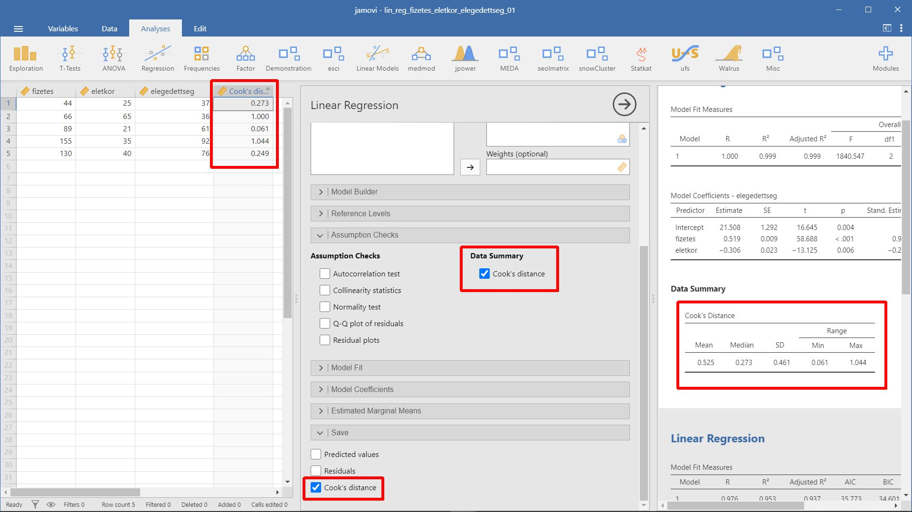
- Multikollinearitás. A multikollinearitás a független változók közötti erős korrelációra utal. Multikollinearitás bizonytalanná teszi és korlátozza a modell magyarázó erejét, bizonyos esetekben a regressziós számítást el sem lehet végezni. Ki lehet szűrni a multikollinearitásban érintett változókat a variancianövelő tényezők (variance inflation factor, VIF) és a tolerancia értékek elemzésével. Ha legnagyobb VIF érték tíznél nagyobb, illetve ha az átlagos VIF érték jelentősen nagyobb, mint egy, akkor az problémát jelenthet. A tolerancia értékek gyakorlatilag a VIF értékek reciprok értékei (1/VIF). Az érintett változókat kihagyhatjuk a modellből, vagy származtatott adatokkal dolgozunk tovább (például főkomponens elemzéssel nyert adatokkal).
A VIF megmutatja a becsült regressziós együttható varianciája „felfújódásának” mértékét a hibatag varianciájához viszonyítva. A mutató értéke bármilyen nagy lehet. A tolerancia mutató megmutatja, hogy a magyarázóváltozó szórásnégyzetének mekkora része nem magyarázható együttesen a többi magyarázó változóval. Ennek értéke nulla és egy közé esik. Minél nagyobb a multikollinearitás mértéke annál közelebb van a mutató értéke a nullához.
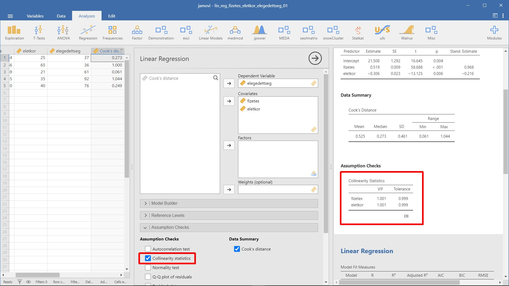
- Homoszkedaszticitás. A homoszkedaszticitás azt jelenti, hogy az eltérésváltozók varianciája állandó és független kell legyen, tehát a függő változó szórásának minden esetben ugyanannyinak kell lennie, függetlenül a független változóktól. Ha a Breusch-Pagan próba nem szignifikáns, akkor a homoszkedaszticitási előfeltétel teljesül.
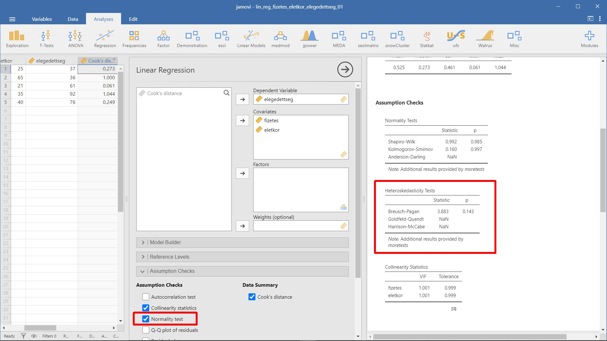
- Autokorreláció. A hibatagok szignifikáns együttmozgása az autokorreláció.A lineáris regresszió szempontjából fontos, hogy a hibatagok (reziduálisok) (vagyis a függő változó azon része, amit a független változók nem magyaráznak) ne korreláljanak egymással. Az autokorrelációt a Durbin-Watson próbával lehet ellenőrizni. A próba nullhipotézisének megtartása zat jelenti, hogy a hibatagokat nem tekintjük autokorreláltnak. (A Durbin-Watson próba esetében az egynél kisebb, illetve a háromnál nagyobb DW próbastatisztika értékek jelenthetnek problémát, a kettő közeli értékek kívánatosak.)
- Reziduálisok normális eloszlása. A reziduális normális eloszlását a szokásos próbákkal és a QQ-ábrával is ellenőrizhetjük.
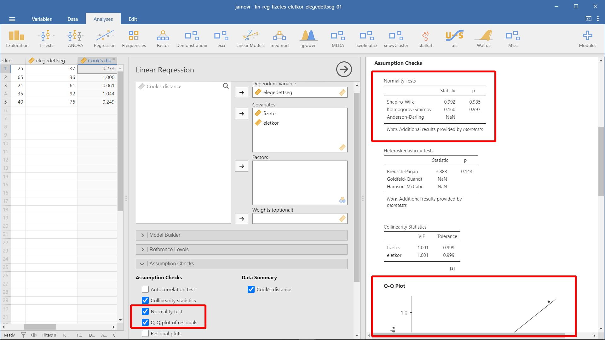
1.7 Példa: Befolyásolja-e a munkahellyel való elégedettséget a fizetés nagysága és az életkor?
- A példa forrása: Münnich és mtsai. (2006, o. 1.6.1 probléma)
- Kapcsolódó jamovi állomány:
lin_reg_elegedettseg.omv
d <- rio::import(file = "adat/lin_reg_elegedettseg.xlsx")
str(d)
#> 'data.frame': 30 obs. of 4 variables:
#> $ fizetes : num 109 125 98 124 115 132 124 99 165 187 ...
#> $ elegedettseg: num 69.2 90.8 71 90.1 77.8 ...
#> $ kor : num 20 46.3 36.2 46 31 ...
#> $ nem : chr "nő" "férfi" "nő" "férfi" ...
psych::headTail(d)
#> fizetes elegedettseg kor nem
#> 1 109 69.15 20 nő
#> 2 125 90.85 46.33 férfi
#> 3 98 71.04 36.2 nő
#> 4 124 90.12 45.95 férfi
#> ... ... ... ... <NA>
#> 27 129 96.32 53 férfi
#> 28 135 97.86 49.4 férfi
#> 29 145 100 46.9 férfi
#> 30 120 81.08 32 férfilm_1 <- lm(elegedettseg ~ fizetes + kor, data = d)
summary(lm_1)
#>
#> Call:
#> lm(formula = elegedettseg ~ fizetes + kor, data = d)
#>
#> Residuals:
#> Min 1Q Median 3Q Max
#> -10.248 -1.543 1.188 2.437 4.333
#>
#> Coefficients:
#> Estimate Std. Error t value Pr(>|t|)
#> (Intercept) 8.13712 3.26797 2.490 0.0192 *
#> fizetes 0.44404 0.02321 19.128 < 2e-16 ***
#> kor 0.53361 0.07127 7.487 4.71e-08 ***
#> ---
#> Signif. codes: 0 '***' 0.001 '**' 0.01 '*' 0.05 '.' 0.1 ' ' 1
#>
#> Residual standard error: 3.59 on 27 degrees of freedom
#> Multiple R-squared: 0.953, Adjusted R-squared: 0.9496
#> F-statistic: 273.9 on 2 and 27 DF, p-value: < 2.2e-16
lsr::standardCoefs(lm_1)
#> b beta
#> fizetes 0.4440418 0.8322319
#> kor 0.5336111 0.3257287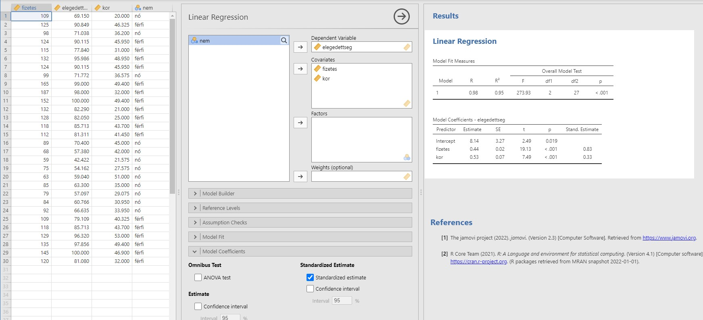
A fenti outputból láthatjuk, hogy a fizetés és a kor változó is szignifikánsan befolyásolja az elégedettséget, hiszen a hozzájuk tartozó szignifikanciaszint \(p<0,05\). A teljes modell vonatkozó F-próba is szignifikáns. A fizetés változó együtthatója \((b_1)\) 0,44, a kor változó együtthatója \((b_2)\) pedig 0,53, ami arra utal, hogy pozitív kapcsolat van a változó között: minél magasabb a fizetés, és minél idősebbek az emberek, annál elégedettebbek a munkahelyükkel.
A pontos becslés a regressziós egyenlet alapján a következőképpen fest:
elégedettség = 8,14 + 0,44 * fizetés + 0,53 * korMivel a többszörös regresszió esetében a független változók hatása csak a standardizált együtthatók mentén hasonlítható össze, így kiszámoltuk a standardizált együtthatókat is. Az adatok jól példázzák, hogy miért fontos a standardizált együtthatókat is vizsgálni, hiszen a nem standardizált együtthatók esetén a kor változó együtthatójának értéke a magasabb, míg a standardizált értékeknél fordítva. Vagyis, ha az egyes változók relatív fontosságának vizsgálatakor nem nézzük a dimenziómentes értékeket, akkor könnyen téves következtetésre juthatunk.
A négyzetes korrelációs együttható értéke 0,9, ami arra utal, hogy a független változók igen jól magyarázzák a függő változót.
1.8 Példa: Befolyásolja-e a kalandvágy a hivatásos katonai szolgálatnál eltöltött időt?
- A példa forrása: Münnich és mtsai. (2006, o. 1.6.2 probléma)
- Kapcsolódó jamovi állomány:
lin_reg_katonasag.omv
d <- rio::import(file = "adat/lin_reg_katonasag.xlsx")
str(d)
#> 'data.frame': 156 obs. of 4 variables:
#> $ kaland : num 3 3 5 1 3 4 2 2 3 5 ...
#> $ egyhangu: num 3 2 4 1 3 1 2 1 2 3 ...
#> $ sport : num 1 1 2 1 2 2 2 1 2 2 ...
#> $ evek : num 4 7 10 3 6 15 5 6 9 13 ...
psych::headTail(d)
#> kaland egyhangu sport evek
#> 1 3 3 1 4
#> 2 3 2 1 7
#> 3 5 4 2 10
#> 4 1 1 1 3
#> ... ... ... ... ...
#> 153 2 4 2 1
#> 154 3 5 3 2
#> 155 1 3 2 2
#> 156 3 2 4 12lm_1 <- lm(evek ~ egyhangu + sport + kaland, data = d)
summary(lm_1)
#>
#> Call:
#> lm(formula = evek ~ egyhangu + sport + kaland, data = d)
#>
#> Residuals:
#> Min 1Q Median 3Q Max
#> -1.6611 -0.5925 -0.0798 0.2726 9.7833
#>
#> Coefficients:
#> Estimate Std. Error t value Pr(>|t|)
#> (Intercept) 0.63951 0.33263 1.923 0.0564 .
#> egyhangu -2.28197 0.09160 -24.912 <2e-16 ***
#> sport 1.52987 0.09447 16.194 <2e-16 ***
#> kaland 3.17525 0.09884 32.125 <2e-16 ***
#> ---
#> Signif. codes: 0 '***' 0.001 '**' 0.01 '*' 0.05 '.' 0.1 ' ' 1
#>
#> Residual standard error: 1.213 on 152 degrees of freedom
#> Multiple R-squared: 0.9195, Adjusted R-squared: 0.9179
#> F-statistic: 578.4 on 3 and 152 DF, p-value: < 2.2e-16
lsr::standardCoefs(lm_1)
#> b beta
#> egyhangu -2.281974 -0.5927751
#> sport 1.529871 0.3821476
#> kaland 3.175249 0.7676009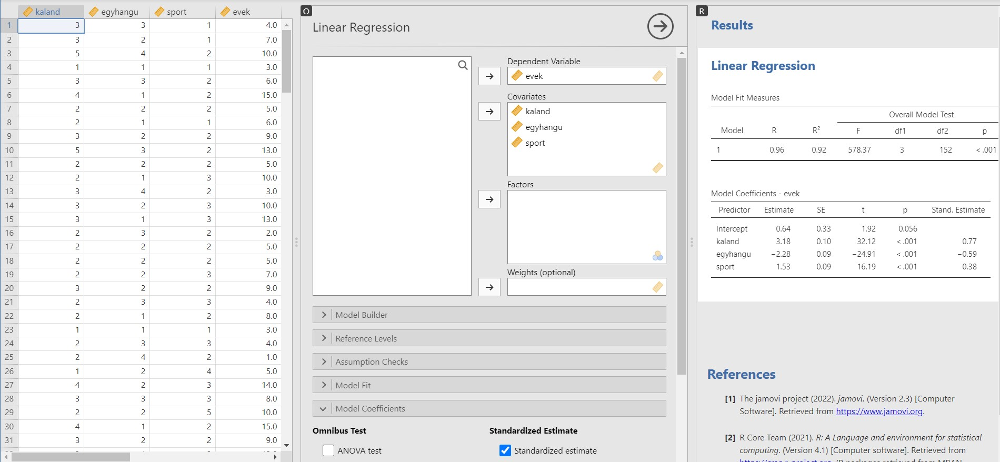
A fenti output a többszörös lineáris regresszió eredményét mutatja:
- A lineáris regressziós modellt megtarthatjuk, hiszen az F-statisztika értékét tekintve a modell szignifikáns, a változók együtthatóinak az értéke nem nulla.
- A modell magyarázóértéke igen jó, hiszen a korrigált determinációs együttható értéke 0,92, vagyis a független változók a függő változó varianciájának kb. 92%-át magyarázzák.
- Minden egyes független változó hatással van a függő változóra, vagyis mind a kalandvágy, az extrém sportok szeretete és a nyugalom utáni vágy is befolyásolja azt, hogy mennyi időt tölt valaki a hivatásos katonai szolgálatban.
- Ellenben a \(b_0\) vagyis a konstans értéke most nulla, hiszen a táblázatban szereplő érték nem szignifikáns.
- Maga a regressziós egyenlet a pontos együtthatók ismeretében a következőképpen alakul:
evek=3,18*kaland+1,53*sport-2,28*egyhanguVagyis minél jobban kedveli valaki a kalandos életet és az extrém sportokat, és minél jobban irtózik a szürke hétköznapoktól, annál több időt tölt a katonaság kötelékében.
A standardizált változók alapján a kaland szeretetének a hatása a legerősebb (0,768), a második legerősebb hatás az egyhangúság kedvelése, ám hatásának iránya negatív (-0,593), leggyengébb hatása pedig az extrém sportok szeretetének van (0,382).